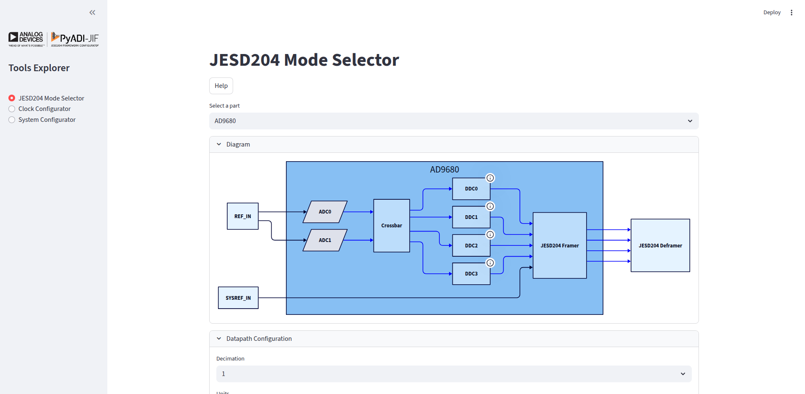

JIF Tools Explorer
The JIF Tools Explorer is an interactive web-based application built with Streamlit that provides a graphical interface for configuring and exploring JESD204 based systems with Analog Devices converters and clock chips.
New to JIF Tools?
Check out the Quick Start Guide for step-by-step examples to get up and running in minutes!
Installation
The JIF Tools Explorer is included with the pyadi-jif package. Install it with:
pip install 'pyadi-jif[cplex]'
For development or to include Streamlit dependencies:
pip install 'pyadi-jif[cplex,tools]'
Launching the Application
Once installed, you can launch the JIF Tools Explorer from the command line:
jiftools
This will start a local web server and automatically open the application in your default web browser. The application typically runs at http://localhost:8501.
Application Overview
The JIF Tools Explorer provides three main tools accessible from the sidebar:
JESD204 Mode Selector - Explore and filter JESD204 modes for ADI converters
Clock Configurator - Configure clock distribution chips for your system
System Configurator - Complete end-to-end system configuration (FPGA + Converter + Clock)
JESD204 Mode Selector
The JESD204 Mode Selector helps you find suitable JESD204 modes for your ADI converter based on your application requirements.
Features
Part Selection: Choose from a wide range of ADI converters (ADCs, DACs, MxFEs, Transceivers)
Datapath Configuration: Configure decimation/interpolation settings
Sample Rate Control: Set converter sample rates with flexible units (Hz, kHz, MHz, GHz)
Mode Filtering: Filter JESD204 modes by parameters (M, L, N, Np, F, S, K, HD, CS)
Validation: Automatically validates modes against device constraints
Visual Diagrams: View clock tree diagrams for ADC converters
Export: Export mode tables to CSV
Usage
1. Select a Converter
From the “Select a part” dropdown, choose your converter. The list includes:
ADCs: AD9680, AD9625, etc.
DACs: AD9144, AD9136, etc.
MxFEs: AD9081, AD9082, etc.
Transceivers: adrv9009, etc.
2. Configure Datapath
In the “Datapath Configuration” section:
For ADCs:
Set decimation values (CDDC, FDDC if available)
Configure converter sample rate
For DACs:
Set interpolation values (CDUC, FDUC if available)
Configure converter sample rate
3. Set Converter Rate
Select units (Hz, kHz, MHz, or GHz)
Enter the desired converter rate
The derived sample rate will be calculated automatically
4. Filter JESD Modes
Use the multiselect controls in the “Configuration” section to filter modes by JESD204 parameters:
M: Number of converters
L: Number of lanes
N: Converter resolution
Np: Number of bits per sample
F: Octets per frame
S: Samples per converter per frame cycle
K: Frames per multiframe
HD: High density mode
CS: Control bits per sample
5. View Results
The “JESD204 Modes” section displays:
Valid modes matching your criteria
Lane rates and sample rates for each mode
Toggle to show/hide invalid modes
Example Workflow
# Example: Configure AD9680 for 1 GSPS operation
1. Select part: "AD9680"
2. Set decimation: 1 (no decimation)
3. Set units: GHz
4. Set converter rate: 1.0 GHz
5. Filter by L=4 (4 lanes)
6. Review valid modes in the table
7. Note lane rates for FPGA configuration
Clock Configurator
The Clock Configurator helps you configure ADI clock distribution chips (e.g., HMC7044, AD9545) to generate the required clocks for your system.
Features
Multi-Clock Output: Configure multiple output clocks with different frequencies
Reference Clock: Set input reference clock frequency
Internal Configuration: Control internal clock chip parameters (VCO, dividers, etc.)
Visual Diagrams: View generated clock tree diagrams
Device Tree Export: Export configuration as device tree fragments (for supported chips)
Usage
1. Select a Clock Chip
Choose from supported clock chips:
HMC7044 - High-performance clock distribution
AD9545 - Quad/Octal Clock Generator & Synchronizer
And more…
2. Configure Clocks
Reference Clock:
Set the input reference clock frequency
Output Clocks:
Specify number of clock outputs needed
For each output:
Set the desired frequency
Assign a descriptive name (e.g., “ADC_CLK”, “FPGA_REF”)
3. Internal Configuration
Adjust internal parameters if needed:
VCO frequency ranges
Divider values
Distribution settings
The tool will automatically calculate valid configurations.
4. View Results
If a valid configuration is found:
Configuration parameters are displayed
Clock tree diagram shows the signal flow
Device tree fragment (if supported) for Linux driver integration
Example Workflow
# Example: HMC7044 configuration for AD9680 + FPGA
1. Select part: "hmc7044"
2. Set reference clock: 125 MHz
3. Configure outputs:
- Output 1: 1000 MHz (name: "ADC_SAMPLE_CLK")
- Output 2: 250 MHz (name: "FPGA_REF_CLK")
4. Review generated configuration
5. View clock tree diagram
6. Export device tree fragment
System Configurator
The System Configurator provides end-to-end configuration of a complete JESD204 system including FPGA, converter, and clock chip.
Features
Complete System: Configure all components together
FPGA Integration: Set up FPGA transceiver parameters (Xilinx, Intel)
Development Kit Presets: Quick setup for common evaluation boards
Automatic Solving: Automatically finds valid configurations across all components
System Diagram: Visualize the complete system architecture
Usage
1. Select Components
Choose:
Converter: Your ADI converter (ADC/DAC/MxFE)
Clock Chip: Clock distribution chip
FPGA: Target FPGA vendor (Xilinx, Intel)
2. Configure Converter
Set converter parameters:
Sample clock frequency
Decimation/interpolation
JESD204 mode
3. Configure FPGA
Select FPGA settings:
Development kit (optional)
Transceiver type (QPLL/CPLL for Xilinx)
Reference clock frequency
4. Set VCXO/Reference
Specify the system reference clock (VCXO) frequency.
5. Solve and View
Click solve to:
Calculate complete system configuration
Validate all constraints are met
Generate system diagram
Show configuration for all components
Example Workflow
# Example: AD9680 + HMC7044 + Xilinx ZCU102
1. Create system:
- Converter: "AD9680"
- Clock: "hmc7044"
- FPGA: "xilinx"
- VCXO: 125 MHz
2. Configure converter:
- Sample rate: 1 GSPS
- Decimation: 1
- Mode: 0x88
- K: 32
3. Configure FPGA:
- Dev kit: "zcu102"
- Force QPLL: Yes
4. Solve system
5. View results:
- Clock configuration
- Converter settings
- FPGA transceiver config
- JESD204 link parameters
- System block diagram
Tips and Best Practices
Performance Optimization
Start Simple: Begin with basic configurations before adding complexity
Use Filters: Narrow down modes early to reduce computation
Valid Modes Toggle: Hide invalid modes to focus on viable options
Common Workflows
Finding Compatible Modes
Set your sample rate requirement
Filter by available lane count
Review lane rates against FPGA capabilities
Select mode with margin for PVT variation
Clock System Design
Identify all required clocks (ADC, FPGA ref, SYSREF, etc.)
Start with reference clock you have available
Configure outputs in priority order
Verify clock quality (jitter, phase noise)
System Integration
Use System Configurator for initial feasibility
Switch to individual tools for fine-tuning
Validate with hardware using exported configurations
Troubleshooting
No valid modes found:
Relax filter constraints
Check sample rate is within device limits
Verify decimation/interpolation settings
Clock configuration fails:
Check if output frequencies are achievable with selected reference
Verify VCO frequency ranges
Try different internal divider settings
System solve fails:
Ensure all components are compatible
Check FPGA transceiver supports required lane rates
Verify reference clock is appropriate for FPGA
API Access
While the JIF Tools Explorer provides a graphical interface, all functionality is also available through the pyadi-jif Python API for scripting and automation:
import adijif
# Example: Programmatic JESD mode search
converter = adijif.AD9680()
converter.sample_clock = 1e9
converter.decimation = 1
# Get valid modes
modes = converter.quick_configuration_modes
# Or use the mode selector
from adijif.utils import get_jesd_mode_from_params
found_modes = get_jesd_mode_from_params(
converter,
L=4,
M=2,
jesd_class="jesd204b"
)
For more details on the Python API, see the API Documentation.
Screenshots
JESD204 Mode Selector
The mode selector interface showing filtered modes for AD9680:

Mode table with sample rates, lane rates, and configuration parameters
Clock Configurator
HMC7044 configuration with multiple outputs:

Clock tree diagram showing signal distribution
System Configurator
Complete system configuration view:

End-to-end system block diagram
Technical Details
Architecture
The JIF Tools Explorer is built using:
Streamlit: Web application framework
pyadi-jif: Core JESD204 configuration library
docplex: Constraint solver (CPLEX)
D2: Diagram generation
State Management
The application uses Streamlit’s session state to maintain:
Part selections across tool switches
Configuration values
Generated diagrams (cached for performance)
Performance Considerations
Diagram generation is cached per part
Mode searching is optimized with early filtering
Solver constraints are pre-validated
Contributing
To contribute to JIF Tools Explorer:
Test changes with:
streamlit run adijif/tools/explorer/main.pyAdd tests in
tests/tools/Update documentation as needed
Support
For issues or questions:
GitHub Issues: https://github.com/analogdevicesinc/pyadi-jif/issues
Documentation: https://analogdevicesinc.github.io/pyadi-jif/
ADI Support: https://ez.analog.com/